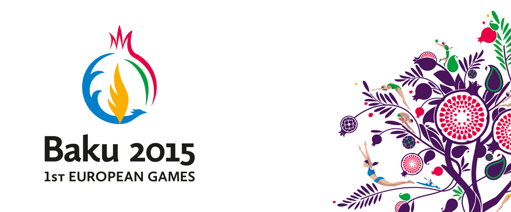
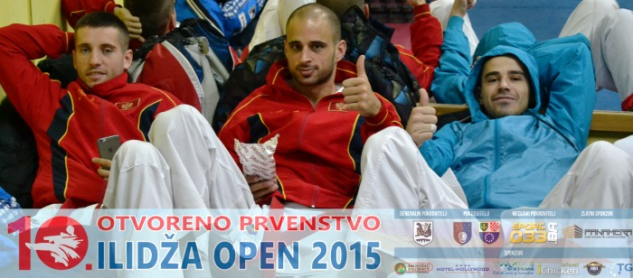
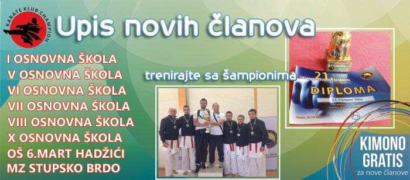
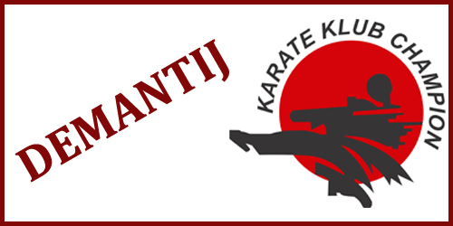

Bliže se prve Evropske olimpijske igre

Dragi sportski prijatelji,
godina 2015. će biti upisana zlatnim slovima u karate sportu.
Jedan od najvećih razloga za takvo nešto jesu sigurno i Prve Evropske olimpijske igre.
Karate je jedan od 30 sportova koji će imati priliku predstaviti se na ovom prestižnom takmičenju i to u sljedećem formatu. U svakoj od težinskih seniorskih kategorija te u katama nastupat će po 8 najboljih evropskih takmičara. Tu će svoje mjesto naći svi oni koji su se borili za odličja na prethodnom Evropskom prvenstvu, jedan predstavnik selekcije organizatora, domaćina Igara i na kraju jedan (ili dva) takmičara koji će dobiti poziv organizatora na osnovu ostvarenih rezultata.
28.03.2015.
A.K.
Detaljnije...
Završeno 10. Otvoreno prvenstvo "Ilidža open 2015"

Dragi sportski prijatelji,
iskreno Vam se zahvaljujemo na odvojenom vremenu i uloženom trudu kako bi podržali naše jubilarno 10. Otvoreno prvenstvo u karateu "Ilidža open 2015".
Nadamo se da ste 07. marta, 2015. godine uživali i osjećali se ugodno boraveći na Ilidži, te da sa našeg turnira nosite samo lijepa sjećanja.
08.03.2015.
A.K.
Detaljnije...
Vaše dijete može biti naredni šampion

Vaše dijete može biti naredni uspješni sportista. Zato cijenjeni roditelji, povjerite nam svoje najveće blago i dozvolite da zajedničkim koracima, slavimo njegove uspjehe.
Karate klub "Champion" trenutno broji 367 mladih sportista koji zajedno nastoje ostvariti svoje pobjede.
Sigurni smo da zajedno možemo mnogo više, zato dođite i budite dio naše porodice.
26.02.2015.
A.K.
Detaljnije...
Demantij na vijesti objavljene na portalu vecernji.hr

Dragi sportski prijatelji i cijenjeni simpatizeri Kluba,
posljednih dana vjerovatno ste bili svjedoci pisanja pojedinih medija iz Hrvatske o našem takmičaru Harisu Sujkoviću, a u kojima su iznijeli niz uvreda na račun takmičara Harisa Sujkovića, čime su narušili njegov angažman u karate sportu, te narušili imidž Kluba i samog takmičara.
Tim povodom, imamo potrebu da Vas upoznamo sa činjenicama, gdje su organizatori zbog vlastitih propusta kao koleteralnu štetu istih odabrali dvojicu vrhunskih sportista, od kojih je jedan i član našeg Kluba.
18.02.2015.
A.K.
Detaljnije...